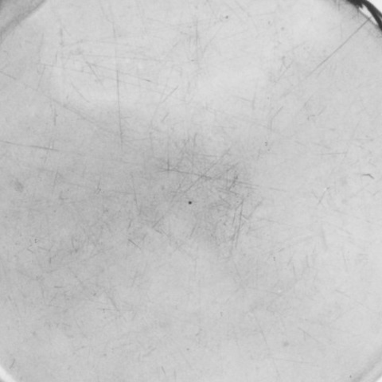
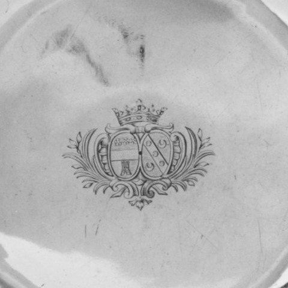
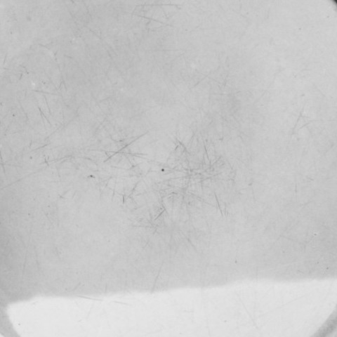
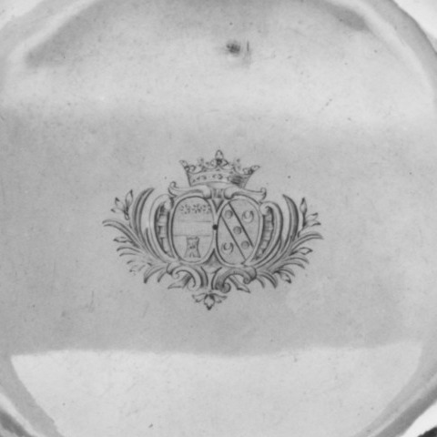
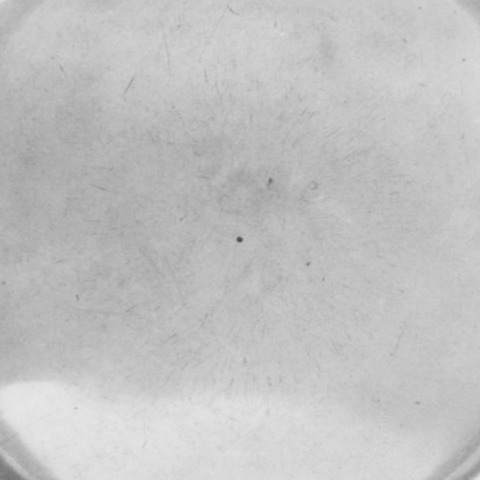

Study 15 / 11 October 2026Five centers / rims removed
The mark at the center
The rims go. Five fields remain, in the shuffled order of Study 13.





The two heraldic centers repeat a device. The three plain fields offer no parallel mark to distinguish the Morel pair. I read the matching marks as support for the .172/.173 pairing, alongside the photographs and catalog fields; a crop alone does not establish it.
Each image is the same-size 480 × 480 pixel crop from the center of its source photograph. The records frame their dishes differently, so these details do not share a physical scale. Sources, in image order: 48.187.169 / 48.187.172 / 48.187.170 / 48.187.173 / 48.187.171. Public Domain.